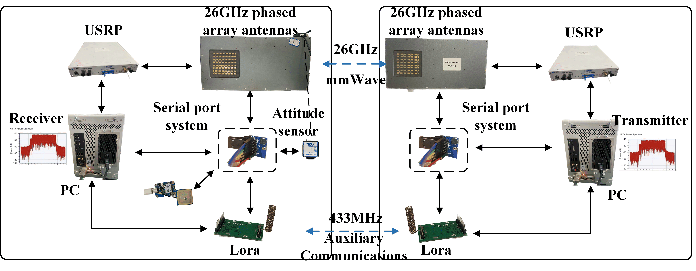

- J. Zhang, F. Wu, Y. Yang, and J. Chen, “Beam tracking: A channel charting and neighborhood search based method,” in GLOBECOM 2023-2023 IEEE Global Communications Conference. IEEE, 2023, pp. 807-812.
- J. Zhang, S. Wang, J. Chen, et al. “Channel Charting based Fast Beam Tracking Design and Implementation,” in IEEE Transactions on Cognitive Communications and Networking. (Under review)
- China Patent: A channel charting based beam tracking method and system. Patent No. ZL202311626161.7
Seleted Projects
- Research and implementation of beam tracking algorithms for B5G millimeter wave communications A channel charting-based beam tracking algorithm for mmWave communications is proposed, reducing scan overhead and improving accuracy via autoencoder-driven feature mapping, mapping tables, and validated through simu lations and real-world 26 GHz communication system field tests. The proposed algorithm significantly reduces scanning complexity while maintaining high prediction accuracy, achieving an accuracy of 98.27% in simulation environments. Compared to existing methods, the proposed method can reduce beam scanning times by up to 55.9%.

Our communication system prototype framework:

The field test video:
- Robotic intelligent navigation Deployed perception, localization, and mapping algorithms on the Orin chip, leveraging computer vision and AI technologies to enable intelligent point-to-point navigation for humanoid robots. We showcased the results at Tsinghua University, receiving extensive positive feedback.
The field test video: